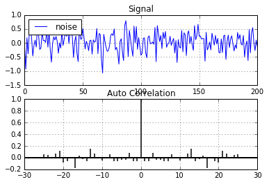
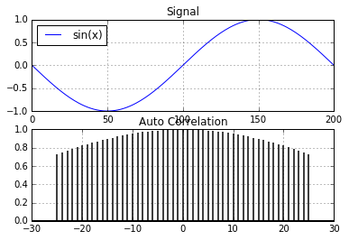
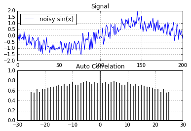
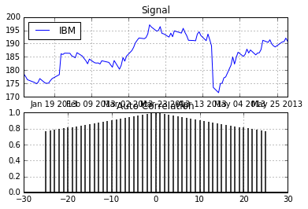
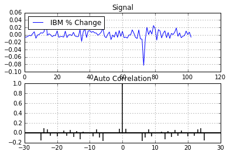

Autocorrelation (somtimes referred to as lagged-correlation) is defined as the linear dependence of a variable with itself at two points in time.
Define:
$$Cov(y_t,y_{t-h}) = y_h$$
Lag-h autocorrelation is given by:
$$\rho_h = Corr(y_t,y_{t-h}) = \frac{y_h}{y_0}$$ The denominator $y_0$ is the lag 0 covariance.
Knowing this, we can calculate the autocorrelation of a signal and it will tell us the similarity betweens observations as a function of time lag between the observations. One would expect a signal with a high autocorrelation to be more predictable than one with a low autocorrelation. What does the autocorrelation of various equities look like? We are about to find out.
How predictable is noise?
First we should take a look at the correlation of a random signal. Lets introduce some gaussian noise.
noise=np.random.normal(0,1,201)/3 #mean, std dev, num pts
plot_acorr(noise,"noise") # autocorrelation plotting function

As expected, there is very little correlation at any lag (n != 0) in random noise. This indicates there are no underlying patterns in the signal and is what we would expect to see in this case.
How much correlation does a sine wave have?
A sine wave is a good start. Being derived from the unit circle, it's a repeating signal that is highly predictable. Lets take a look the autocorrelation of a highly predictable signal.
x = np.sin(np.linspace(-np.pi, np.pi, 201))
plot_acorr(x,"sin(x)")

Very high autocorrelation in a clean sine signal. But the real world is not that nice. A clean signal is not a realistic model of an equity. How about we add some gaussian noise to the signal and look at the autocorrelation again.
noise=np.random.normal(0,1,201)/3 #mean, std dev, num pts
sig=x+noise
plot_acorr(sig,"noisy sin(x)")

Even with gaussian noise added to the original signal, the autocorrelation is still quite high. There are quite a few regression methods we could use that could predict/extract the original signal from the noise in the above example. But does our noisy sine signal model real world equities? Are there really patterns hidden in the noise in equity markets?
We now look at a real signal from the equities market to see how autocorrelated those signals are.
plot_acorr(ibm_df['Adj Close'],"IBM")

Is this the magic bullet?
Is this real? Did I just show a highly liquid equity with a detectable pattern in the price signal? Obviously not. Looking at the price is a mistake and knowing the price doesn't change much on a day to day basis won't help us. If it were this easy, I would imagine there would be many rich high school kids. So what's the problem?
What information do we need?
Since we want to predict the daily change in equity price we need to look at the correlation in percent change rather than the raw price. Lets do that:
plot_acorr(ibm_df['Adj Close'].pct_change().values[1:],"IBM % Change")

Sorry, it's not going to be that easy...
What a difference! The plot now looks very similar to the random noise plot above. There is almost no correlation at any time lag. This tends to indicate there is little predictability in equities using price alone. This has been my experience when using signals derived from equity price. So the next time someone tells you they fed stock market data into a neural network and are able to predict tomorrow's price, show them this blog post!
Is this the end for predicting time-series derived from equities? Not at all, but things are going to get a lot more complicated... stay tuned.